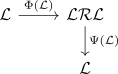

monoidal adjunction
Definition
Let $(\mathcal{V}, \otimes_{\mathcal{V}}, \mathds{1}_{\mathcal{V}}), (\mathcal{W}, \otimes_{\mathcal{W}}, \mathds{1}_{\mathcal{W}})$ be monoidal categories and $\mathcal{L}: \mathcal{V} \rightarrow \mathcal{W}, \mathcal{R}: \mathcal{W} \rightarrow \mathcal{V}$ lax monoidal functors Then a monoidal adjunction is given by lax monoidal transformations
\begin{align*}
\Phi: \mathcal{LR} \rightarrow \mathrm{id}_{\mathcal{W}} \\
\Psi: \mathrm{id} \rightarrow \mathcal{RL}_{\mathcal{V}}
\end{align*}
satisfying the Adjunction and triangle-identity identities, i.e. TODO

see: